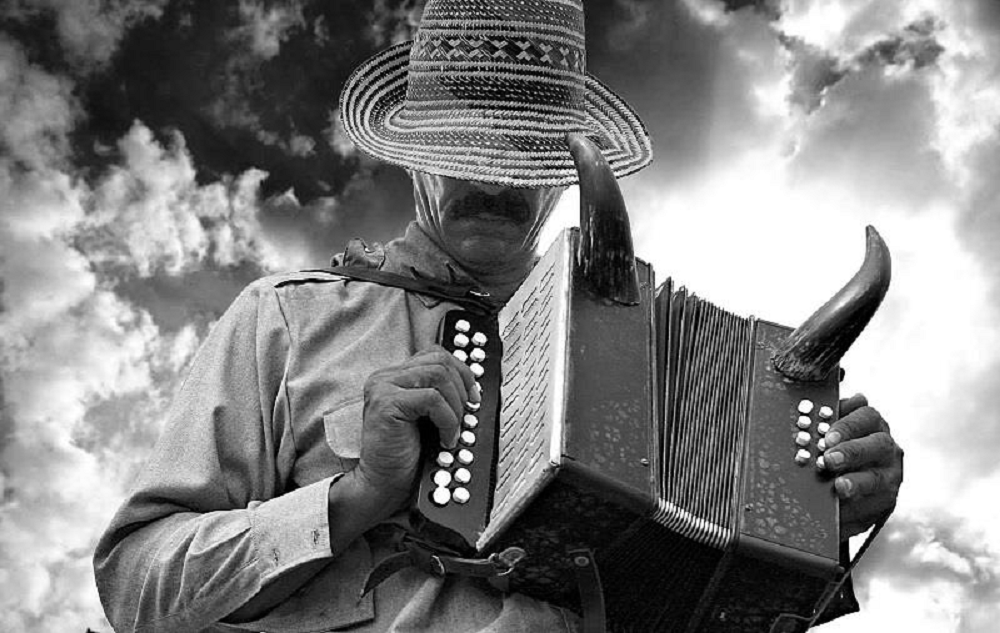

Los viajes del viento
Note 038
Home > Blog A Musician's Log > Note 038
The last journey of an accordionist
In Ciro Guerra's Los viajes del viento ("The travels of the wind", 2009), Ignacio Carrillo is an aging vallenato musician who has spent much of his life travelling through northern Colombia, carrying songs and stories from one community to another. Following the death of his wife, he decides to abandon music and undertake one final journey: returning his accordion to the man who originally gave it to him.
The instrument has an unusual history. According to the film's legend, it once belonged to the devil and carries a curse that condemns its owners to a wandering existence. Ignacio wants to be free of both the accordion and the life associated with it.
His journey begins in Majagual, Sucre, and takes him towards Taroa, beyond the desert of La Guajira. Along the way, he reluctantly accepts the company of Fermín, a young man determined to become a musician like him.
The film was directed by Ciro Guerra and featured Marciano Martínez as Ignacio and Yull Núñez as Fermín. Martínez was himself an experienced vallenato musician, chosen partly for his ability to play, sing, and improvise. The film's musical performances therefore draw directly on the abilities of a practising artist rather than relying exclusively on an actor imitating instrumental technique.
The accordion and the travelling juglar
The diatonic button accordion became established in northern Colombian music during the nineteenth and twentieth centuries, eventually assuming a central role in the development of vallenato.
An instrument of European manufacture, the accordion produces sound through metal free reeds activated by air supplied from its bellows. In a diatonic button accordion, the pitch produced by a button commonly depends on whether the bellows are being opened or closed. This mechanism gives the instrument distinctive technical possibilities. Melodic playing requires coordination between button selection and bellows direction, while the left-hand mechanism provides bass notes and chords.
In traditional vallenato, the accordion is commonly accompanied by the caja, a small drum played with the hands, and the guacharaca, a scraped idiophone. Their rhythmic interaction supports the genre's principal aires: paseo, merengue, son, and puya.
But the accordion's importance in Los viajes del viento lies particularly in the musical occupation of its protagonist. The traditional vallenato juglar was associated with travelling between communities, performing songs, composing verses, and circulating stories about events and people. Musical knowledge was transmitted through listening, personal encounters, competition, and participation in local celebrations.
Peter Wade's research into Colombian popular music places these traditions within a broader history of regional identity, social relations, commercial recording, and changing musical institutions.
Ignacio represents a particular version of that older occupation: a musician whose repertoire and reputation have been established through years of travelling and performing. Fermín, by contrast, wants to acquire the skills and experience that would allow him to follow the same path. Their uneasy relationship introduces a question about musical apprenticeship. Learning to play an accordion is not necessarily the same as learning the repertoire, performance conventions, improvisational practices, and social responsibilities of a juglar.
Musical encounters along the route
The journey provides opportunities to encounter different musical practices within Colombia's Caribbean region.
The film includes informal performances, competitive encounters, and musicians associated with different communities. Accordion playing is heard alongside singing and percussion, while other scenes introduce musical traditions beyond the familiar vallenato ensemble.
Competition is especially important. Vallenato culture includes traditions of musical rivalry, among them the piquería, in which performers challenge one another through improvised sung verses. Such encounters test not only technical ability but also invention, memory, verbal agility, and the capacity to respond to an opponent.
The film incorporates this competitive musical environment into its narrative, alongside the legend of an accordion associated with supernatural powers.
Guerra also includes a ceremonial encounter involving a group of percussionists. Such sequences broaden the film's musical setting beyond the accordion, introducing other forms of instrumental performance encountered during the journey.
These scenes should be understood as parts of a fictional film, not as systematic ethnographic records of the communities represented. They are nevertheless valuable for examining how the director chose to present musical differences, instrumental practices, and encounters between performers.
The musical production also deserves attention. The film's score was credited to Iván "Tito" Ocampo, while the songs performed by Ignacio were played and sung by Marciano Martínez himself. Guerra explained that many of these performances received very little subsequent alteration, preserving important aspects of the musician's original execution.
The result is a film in which instrumental performance is not simply illustrated through the soundtrack. It is repeatedly shown as an activity involving particular musicians, instruments, and social encounters.
A journey set in 1968
Although released in 2009, Los viajes del viento takes place in 1968. That date was deliberately chosen. In an interview at the San Sebastián International Film Festival, Guerra connected it with the establishment of the Festival de la Leyenda Vallenata in Valledupar, which began that year.
The festival belonged to a period in which vallenato was acquiring new forms of public recognition. Radio, commercial recording, organized competitions, and larger performance circuits increasingly influenced how the music circulated and how musicians established their reputations.
These developments did not eliminate travelling performers overnight. They did, however, create musical opportunities and institutions different from the journeys, informal gatherings, and personal exchanges associated with the older juglares.
Guerra situated Ignacio's story at the intersection of these changes. The protagonist wants to abandon the instrument and the wandering occupation that have defined his life, while Fermín is determined to enter that same musical world. The accordion is thus both the object Ignacio intends to return and the instrument Fermín hopes to master.
For an organological reading of the film, this relationship is more revealing than the accordion's mythical curse. The same physical instrument can be approached as something to relinquish, something to inherit, or something through which musical knowledge might be acquired.
The film ends up examining not only an accordionist's journey across northern Colombia, but also the uncertain transmission of a musical occupation at a moment when its conditions were changing.
Readings
- Guerra, Ciro, director. 2009. Los viajes del viento. Ciudad Lunar Producciones.
- UNESCO. 2015. "Traditional Vallenato Music of the Greater Magdalena Region." List of Intangible Cultural Heritage in Need of Urgent Safeguarding, inscription 01095.
- Wade, Peter. 2000. Music, Race, and Nation: Música Tropical in Colombia. Chicago: University of Chicago Press.
- Yoldi, Pili. 2009. "El esplendor del vallenato en la Colombia oculta." Diario del Festival, Festival de San Sebastián, September 21.